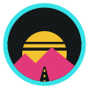
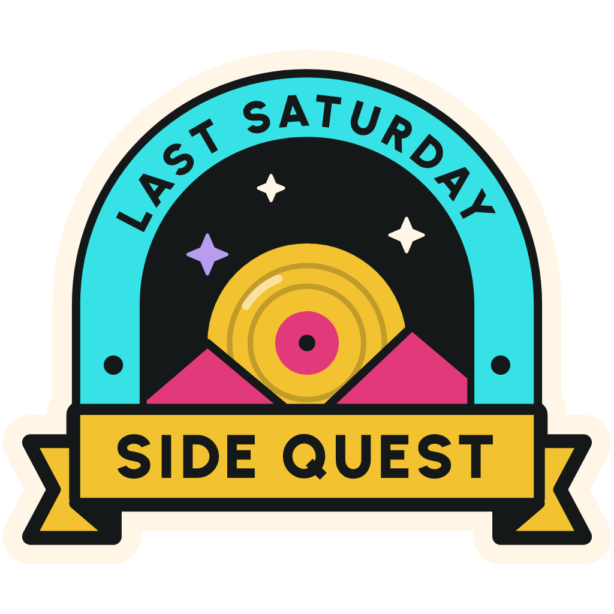
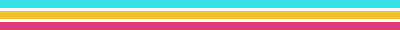
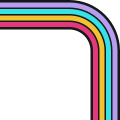

Last Saturday Side Quest
Logo marks, round 1
Six sketches, one per slide, for review. Updated November 4, 2026.
- A
- B
- C
- D

- E

- F



Divider
Corner- On light
Option F · New
Stripe Letters
LSSQ drawn as one set of four stripes, like a 70s racing stripe bent into letters.
Why it could work
The most retro of the six. Each stripe draws in one at a time, and the same stripes make borders and dividers.
Watch out
It's a wordmark, so it's too wide for avatars. Pair it with A there.
Pick one, or mix two
| Option | Best at | Watch out | Your call |
|---|---|---|---|
| A, Record Q | Familiar, reads at 16px | Needs its outline on light | |
| B, Quest Marker | Boldest, easiest to spot | No music in the mark | |
| C, Four Pillars | Tells the whole story | Needs a one-color version | |
| D, Patch | Great on merch | Text too small for avatars | |
| E, Record Sunset | Stickers and patches | Merch only, pair with A | |
| F, Stripe Letters | Most retro, animates, makes decoration | Too wide for avatars |
Starting point: A for the mark, E for stickers. They share the record people know, and A still reads at 16px. F could join them as the wordmark, with its stripes as decoration.